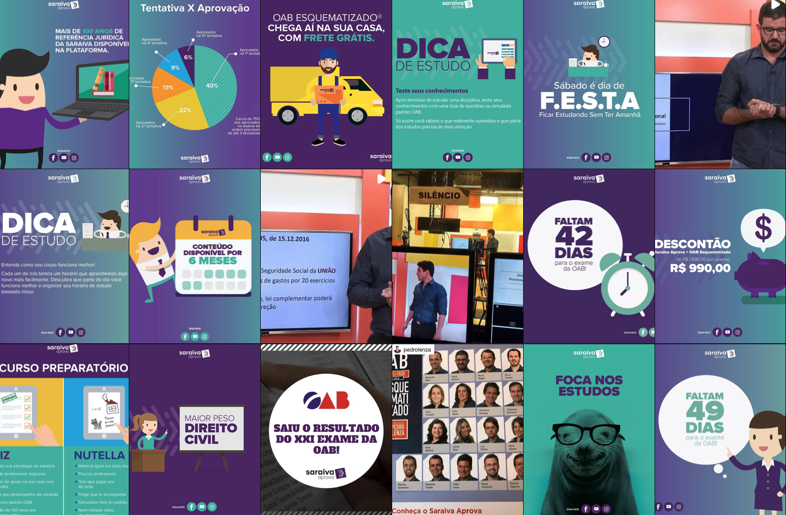

Head de Marketing, Ensino Superior · Jul 2016 – Out 2017
Lançando um Produto de Ed-Tech Jurídico Orientado a Dados Dentro de uma Editora Centenária
Uma nova categoria para uma editora jurídica com mais de 100 anos, lançada com planejamento orientado por persona e disciplina de CRO — além de uma aposta criativa fora da curva que produziu o primeiro trailer de livro em VR do Brasil.
Contexto
Este foi um único cargo — Head de Marketing, Ensino Superior — cobrindo o lado de publicação e produtos digitais do portfólio de ensino superior da SOMOS: Editora Saraiva (a editora jurídica/de ensino superior principal) e Editora Érica (técnica/vocacional). A Benvirá, um selo de publicação voltado ao público consumidor em geral, estava sob o mesmo guarda-chuva de gestão e o mesmo mandato de marketing — a exceção deliberada neste estudo de caso, incluída porque produziu um dos trabalhos mais criativamente ambiciosos do período, não porque compartilhasse público com o restante do portfólio.
Saraiva Aprova — lançando a primeira plataforma adaptativa de preparação para a OAB com machine learning do Brasil
O produto
Saraiva Aprova, uma plataforma adaptativa de preparação para o Exame da OAB incorporando machine learning e gamificação — uma categoria nova para uma editora jurídica com mais de 100 anos.
Como foi lançado
Planejamento orientado por persona e disciplina de CRO desde o primeiro dia — os formatos de landing page foram testados via A/B em vez de lançados no instinto. Resultado: 1.000 alunos no lançamento, e a meta de matrículas de 12 meses foi atingida em menos de 6 meses.
O motor de conteúdo por trás do lançamento
Mais sofisticado do que um calendário de lançamento típico: dados como prova social (um gráfico de taxa de aprovação por tentativa usado diretamente em conteúdo de feed), mecânicas de urgência (conteúdo de contagem regressiva para a prova), cross-sell dentro do próprio ecossistema jurídico da Saraiva, produção real de vídeo (não apenas artes estáticas), uma vitrine de professores para construção de confiança, e um blog dedicado cobrindo conteúdo do Exame da OAB — posicionando o Saraiva Aprova como um destino de conteúdo de verdade, não apenas uma página de produto. Coberto pela PublishNews, considerada a newsletter mais prestigiada do setor editorial no Brasil.
Estratégia de marca Saraiva — construindo um "lovemark" para advogados
Junto ao lançamento do produto, trabalhei no posicionamento de marca mais amplo da Saraiva para seu público de profissionais do direito — uma estratégia deliberada para manter a Saraiva como um "lovemark", e não apenas uma editora utilitária, especificamente para advogados. Isso ocorreu em paralelo à mudança de identidade visual da Editora Saraiva em dezembro de 2016, também coberta pela PublishNews — o trabalho de marca e o lançamento do produto aconteceram na mesma linha do tempo, não em sequência.
Benvirá — a exceção: ousadia criativa na publicação para o consumidor
A Benvirá merece destaque específico porque não é uma história de ensino superior — é evidência de amplitude criativa sob o mesmo mandato: o primeiro trailer de livro imersivo em VR do Brasil, criado para o lançamento de um livro infantil — um formato que ninguém no mercado editorial brasileiro havia usado antes — e um trailer de livro para o primeiro romance voltado ao público adolescente do autor best-seller Augusto Cury, apostando o valor de produção em um nome já reconhecido para lançar um novo formato para esse público. Nenhum dos dois precisava acontecer para que o mandato de ensino superior tivesse sucesso — eles mostram a disposição de correr um risco de formato onde o portfólio tinha liberdade criativa para isso.
Resultados
Iniciativa
Resultado
Lançamento Saraiva Aprova
1.000 alunos no lançamento; meta de matrículas de 12 meses atingida em <6 meses
Lançamento Saraiva Aprova
Coberto pela PublishNews (principal newsletter do setor editorial brasileiro)
Rebranding Saraiva
Mudança de identidade visual coberta pela PublishNews (dez/2016)
Trailer VR da Benvirá
Primeiro trailer de livro imersivo em VR do mercado editorial brasileiro
Trailer Benvirá / Augusto Cury
Aposta de formato no primeiro romance adolescente de um autor best-seller
Capturas de tela
O blog Saraiva Aprova — conteúdo sobre o Exame da OAB e temas do universo jurídico, posicionando a plataforma como um destino de conteúdo de verdade.

O motor de conteúdo do Instagram: gráficos de taxa de aprovação, contagens regressivas para a prova, promoções de pacotes e a vitrine de professores — dados e construção de confiança, não apenas artes promocionais.
 Head de Marketing, Ensino Superior · Jul 2016 – Out 2017
Head de Marketing, Ensino Superior · Jul 2016 – Out 2017